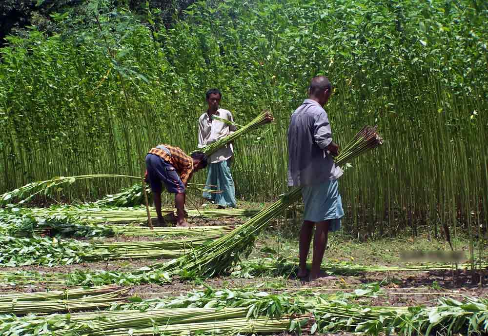
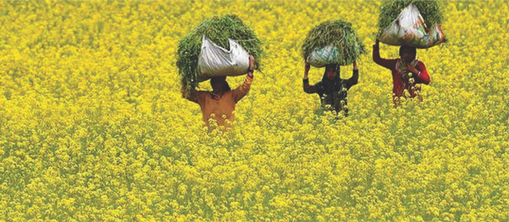
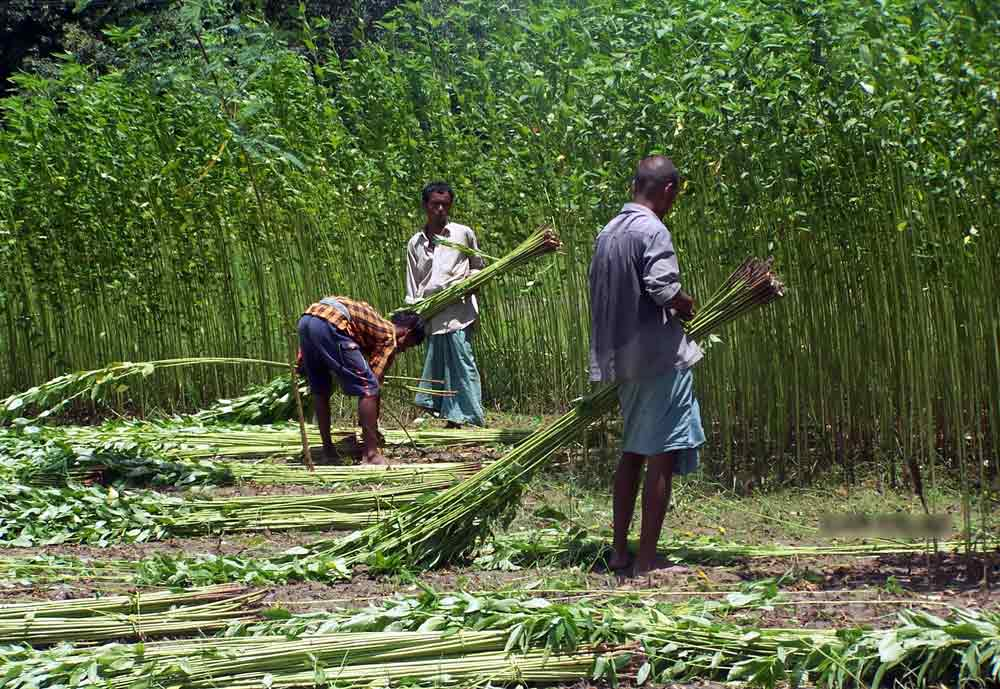
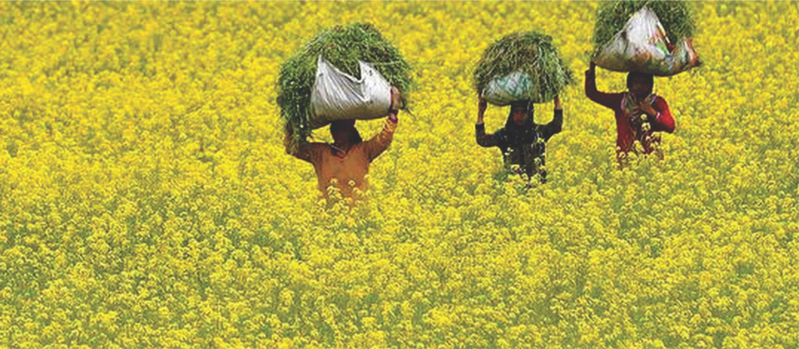
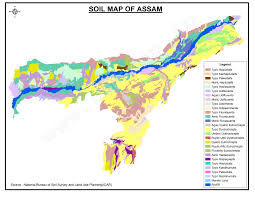
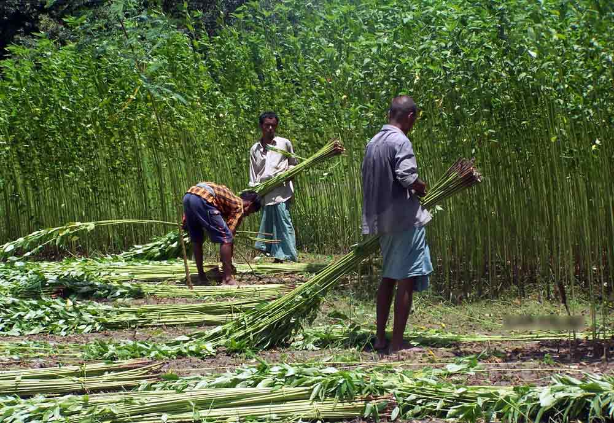
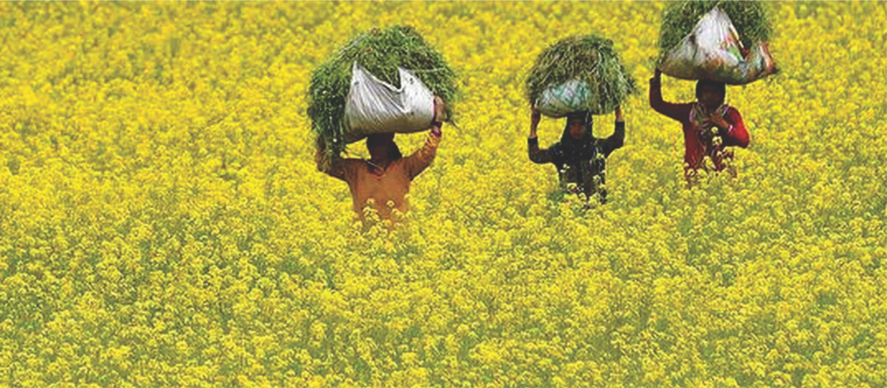

A comprehensive resource on soil distribution, best crops, and farming techniques in Assam.
Soil Distribution in Assam
Assam's soil is fertile and supports diverse agriculture: Alluvial Soil (ideal for rice and jute), Laterite Soil (best for tea plantations), and Sandy Soil (good for vegetables and mustard).
Experts suggest combining traditional farming with modern techniques to enhance Assam’s agricultural productivity.

